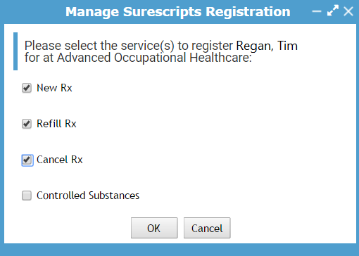

Once all user records are complete, linked to health centers, and have the appropriate security roles per the setup instructions above, each non-EPCS can then be registered with Surescripts by following the steps below.
Note: Surescripts registration must be completed by a Cority employee or an eRx Admin.

Important: Do not select ‘Controlled Substances’ from this list; this setting involves a more involved setup procedure. See the EPCS Registration section for instructions on how to setup controlled substance prescriptions._EPCS_Registration_1
The user record will now have a Surescripts Prescriber ID and Service Level. The Service Level indicates which options were selected in the Manage Surescripts Registration form.
Note: Usernames and passwords will be masked with ‘xxxx’ in all Surescripts transactions.